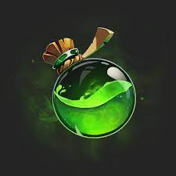
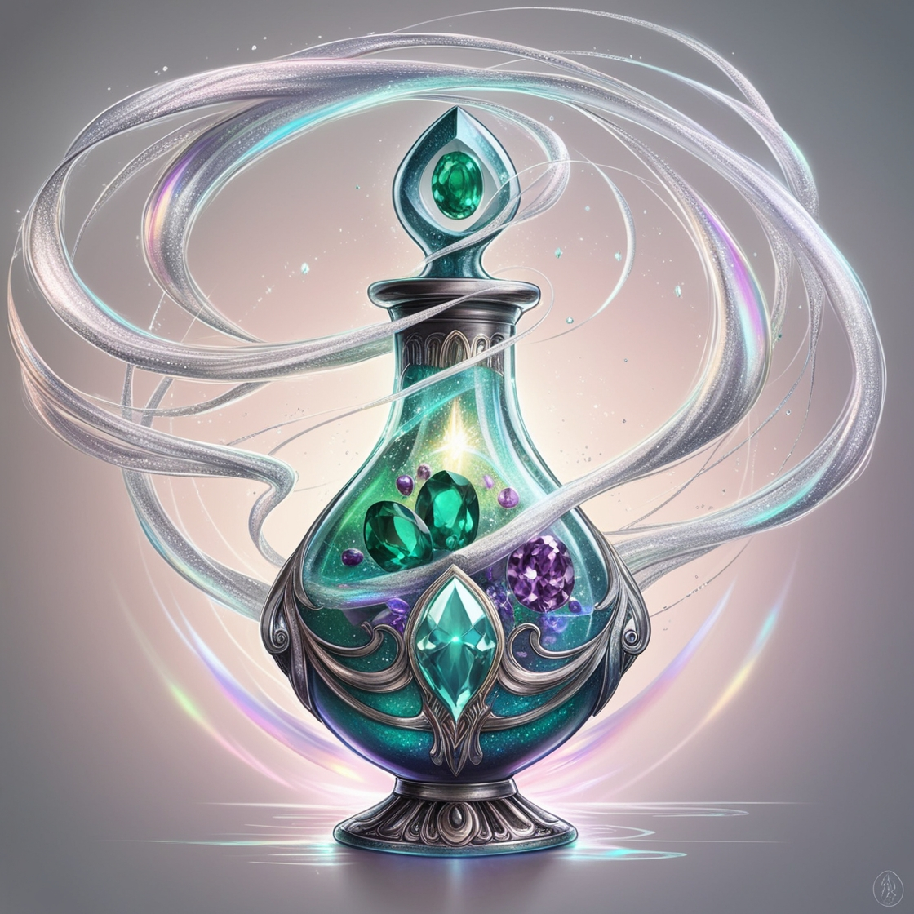
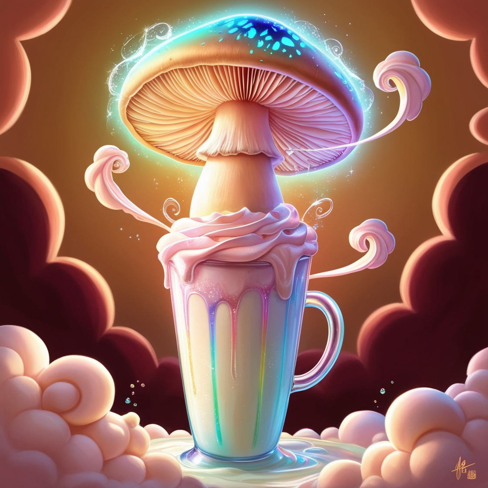
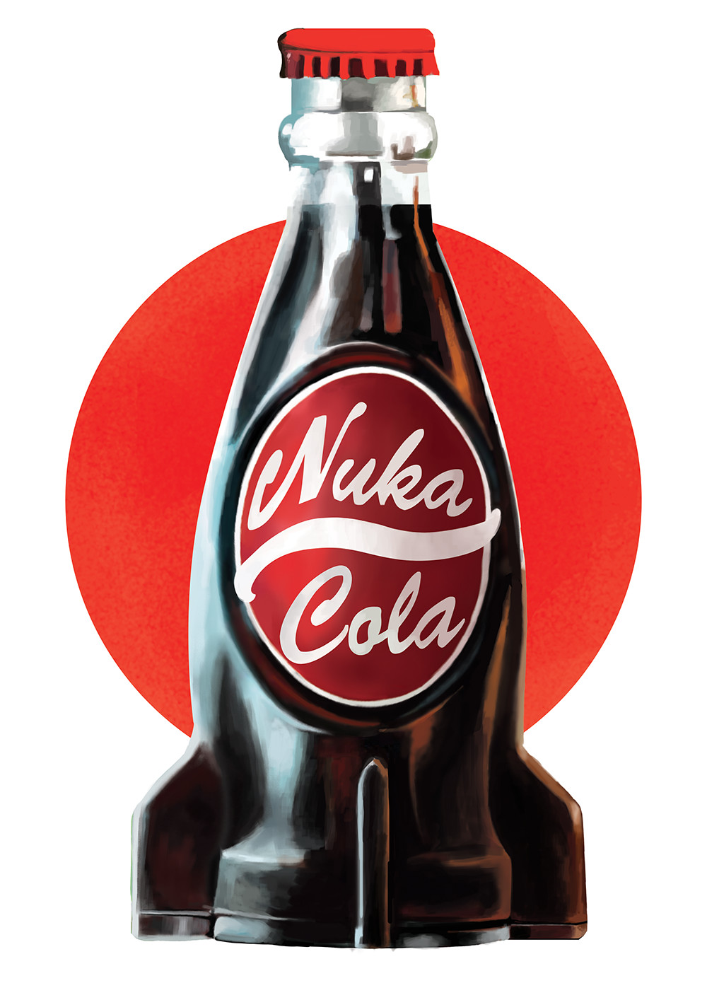
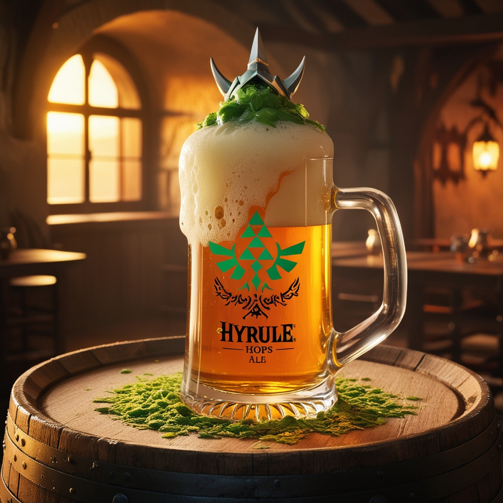
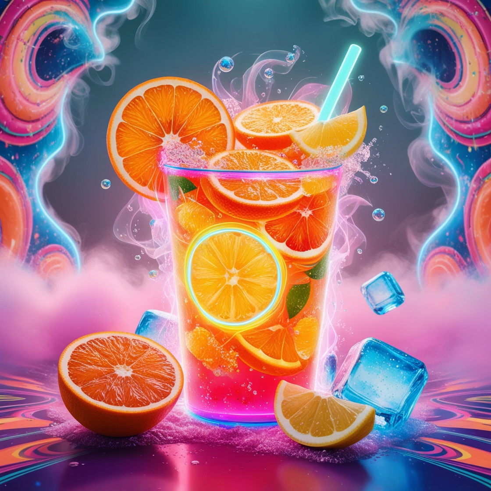

Bebidas

Potion de Vida (Inspiração: Final Fantasy)
-
Ingredientes: Vodka, Blue Curaçao, suco de limão, refrigerante de limão.
-
Decoração: Uma cereja no fundo do copo.

Elixir de Energia (Inspiração: RPGs em geral)
-
Ingredientes: Tequila, suco de abacaxi, suco de cranberry, energético.
-
Decoração: Fatia de abacaxi na borda do copo.

Mega Mushroom Shake (Inspiração: Super Mario)
-
Ingredientes: Sorvete de baunilha, leite, chantilly, calda de chocolate.
-
Decoração: Cogumelo de chocolate em cima do chantilly.

Nuka-Cola (Inspiração: Fallout)
-
Ingredientes: Coca-Cola, rum escuro, um toque de limão.
-
Decoração: Rodela de limão na borda do copo.

Hyrule Hops (Inspiração: Legend of Zelda)
-
Ingredientes: Gin, tônica, limão siciliano.
-
Decoração: Rodela de limão no copo.

Ecto Cooler (Inspiração: Ghostbusters)
-
Ingredientes: Vodka, suco de limão, curaçao de laranja, refrigerante de limão.
-
Decoração: Gomos de laranja na borda do copo.
Sangue de Demônio (Inspiração: Doom)
-
Ingredientes: Tequila, licor de framboesa, suco de limão, refrigerante de limão.
-
Decoração: Raspas de limão na borda do copo.
Mana Potion (Inspiração: World of Warcraft)
-
Ingredientes: Vodka, Blue Curaçao, suco de limão, refrigerante de limão.
-
Decoração: Cubos de gelo azuis.
Piranha Plant Punch (Inspiração: Super Mario)
-
Ingredientes: Rum claro, suco de abacaxi, suco de maracujá, grenadine.
-
Decoração: Folhas de hortelã.
Master Sword Martini (Inspiração: Legend of Zelda)
-
Ingredientes: Vodka, licor de menta, vermute seco.
-
Decoração: Azeitona verde no fundo do copo.